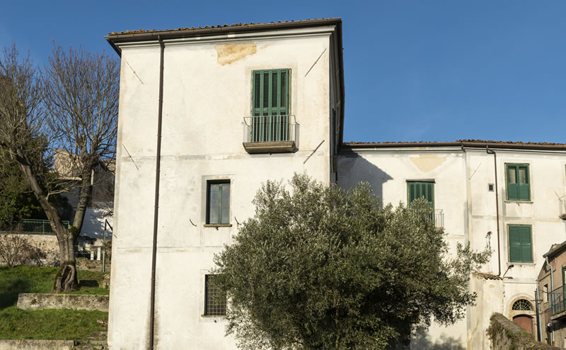

La FONDAZIONE LAURINI, iscritta al n. 71 del Registro Regionale delle Persone giuridiche, apolitica e senza scopo di lucro, è nata il 9 luglio 2018 su iniziativa di Francesco e Giancarlo Laurini, d'intesa con l'Amministrazione Comunale di Tito, con lo scopo di creare nell'antico Palazzo di famiglia, ubicato alla Via Borgo San Donato n. 8 e donato alla Fondazione, un Centro museale archeologico e culturale a disposizione della Comunità titese, oltre che di studiosi, ricercatori e turisti, che sempre più numerosi scoprono e visitano la Basilicata.

In questo Centro, la Fondazione si propone di dar vita all'ISTITUTO DEL SIMBOLO "LORENZO OSTUNI", progettato dal defunto artista, filosofo e regista teatrale, nato a Tito nel 1938 e deceduto in Roma nel 2014, lasciando scritti, documenti e opere sue personali e della madre Angelica La Cava, che saranno custoditi catalogati e archiviati nel Palazzo, unitamente ai documenti costituenti l'Archivio storico della famiglia Laurini.
Particolare cura sarà dedicata a valorizzare e facilitare le ricerche archeologiche nell'area della Torre di Satriano, con la raccolta e l'esposizione dei reperti archeologici.
La Fondazione si propone di organizzare, in stretto coordinamento con la Sovrintendenza ai Beni Culturali della Basilicata e in collaborazione con l'Università, eventi culturali, seminari, corsi di lezioni ed esercitazioni, master, con tutte le attività connesse e collaterali, ospitando anche una Biblioteca "virtuale" a disposizione dei cittadini ed in particolare dei giovani di Tito e delle comunità viciniori.
D'intesa con gli Enti pubblici e privati e con le istituzioni territoriali e culturali interessate, promuoverà anche nell'ambito di convenzioni pluriennali con la Regione Basilicata, accordi per la progettazione e realizzazione di iniziative per la valorizzazione e pubblicizzazione del "Palazzo Laurini", dell'Istituto del Simbolo e del materiale artistico e museale che in esso sarà raccolto, raccordandosi anche ai programmi culturali e turistici connessi alle manifestazioni in programma a Matera quale "Matera Capitale della Cultura nel 2019".
La Fondazione accompagnerà e supporterà attività convegnistica, espositiva e comunicativa connessa ai compiti statutari, con pubblicazioni significative, anche attraverso il continuo presidio al sito internet della Fondazione, con attività di ricerca e di approfondimento accademico-scientifico in tutti i settori oggetto dello scopo della Fondazione, con possibilità di ospitare nel Palazzo Laurini ricercatori universitari e studiosi in genere.
Il FONDO DI DOTAZIONE iniziale del valore stimato attuale di 750 mila euro è costituito dal PALAZZO LAURINI, con annesso giardino, donato dai germani Francesco e Giancarlo Laurini e dalle OPERE del prof. Lorenzo Ostuni donate dalla famiglia Ostuni.
Esso sarà incrementato:
- dai lasciti, dalle donazioni e da qualsiasi altro apporto da parte di Società, di Enti Pubblici e Privati ovvero di privati cittadini, con l'espressa destinazione al Fondo di Dotazione;
- dai contributi di qualsiasi natura assegnati alla Fondazione dallo Stato italiano, dall'Unione Europea, da Enti Pubblici o Privati e da persone fisiche, con l'espressa destinazione ad incremento del patrimonio della Fondazione;
- dalle rendite e dalle entrate ed elargizioni di qualsiasi genere che il Consiglio di Amministrazione destini a incremento del fondo di dotazione.
FONDO DI GESTIONE sarà costituito:
- dalle rendite e dai proventi derivanti dall'intero patrimonio della Fondazione e da ogni altra fonte espressamente destinati dal Consiglio di Amministrazione all'attuazione degli scopi statutari;
- dai contributi attribuiti alla Fondazione dallo Stato Italiano, dall'Unione Europea, da Enti territoriali e da altri Enti pubblici e privati di qualsiasi genere e natura, espressamente destinati all'attuazione degli scopi statutari e non all'incremento del patrimonio;
- dai proventi delle attività istituzionali e delle attività economiche strumentali, accessorie e connesse alla realizzazione dei fini istituzionali eventualmente svolte, espressamente destinati all'attuazione degli scopi statutari dal Consiglio di Amministrazione.
In caso di SCIOGLIMENTO DELLA FONDAZIONE, i suoi beni verranno devoluti ad altro ente che persegua finalità analoghe a quelle della fondazione estinta, ad eccezione del Palazzo Laurini, la cui proprietà passerà al Comune di Tito, con l'obbligo per lo stesso di destinarlo alle stesse finalità della Fondazione o comunque a scopi di pubblica utilità.